Prototypowanie i druk 3D
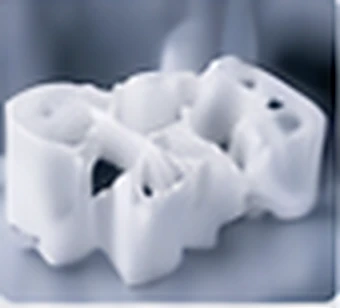
Od koncepcji do funkcjonalnego prototypu.
Inżynieria innowacji medycznych
Projektujemy, prototypujemy i rozwijamy technologie dla medycyny i przemysłu — precyzyjnie, interdyscyplinarnie i z myślą o realnym zastosowaniu.
Nasze podejście
Łączymy wiedzę naukową, inżynierię i sztuczną inteligencję, aby tworzyć, testować i wdrażać innowacyjne technologie medyczne.
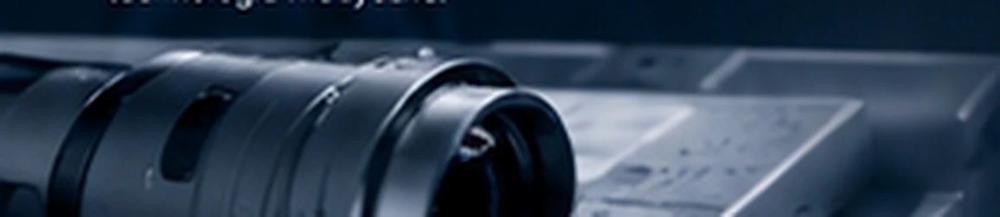
Od pomysłu, przez prototypowanie i walidację, aż po gotowe rozwiązanie.
Jak pracujemy
Każdy projekt ma inne tempo i skalę. Łączymy wiedzę inżynieryjną, kliniczną i regulacyjną, a konsultacje towarzyszą nam na każdym etapie.
Doradztwo eksperckie · wsparcie kliniczne · wytyczne regulacyjne · ciągła informacja zwrotna
Wspólnie definiujemy cel, wymagania i kontekst kliniczny.
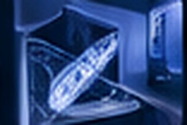
Opracowujemy koncepcję, model, elektronikę oraz algorytmy AI.
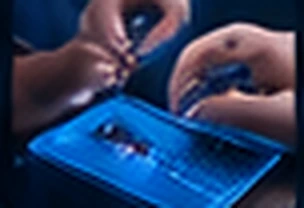
Wykonujemy prototyp. Integrujemy komponenty, oprogramowanie i algorytmy.
Testujemy, oceniamy wyniki i iterujemy rozwiązanie.
Przygotowujemy rozwiązanie do wdrożenia, skalowania i komercjalizacji.
Iteracja na podstawie wyników
Kompetencje

Od koncepcji do funkcjonalnego prototypu.
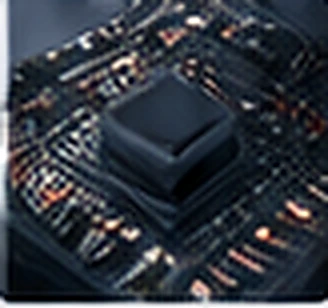
Projektowanie i integracja układów elektronicznych.
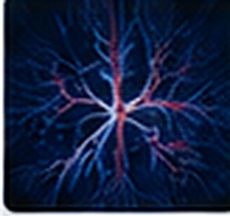
Uczenie maszynowe, analiza obrazów i sygnałów.
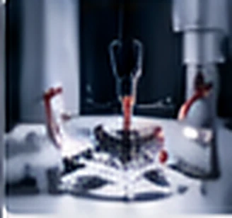
Testy, walidacja i optymalizacja.
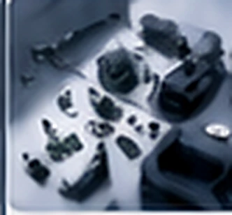
Komponenty mechaniczne, elektroniczne, specjalistyczne, infrastruktura.
Projekty
Wizualizacje koncepcyjne projektów.
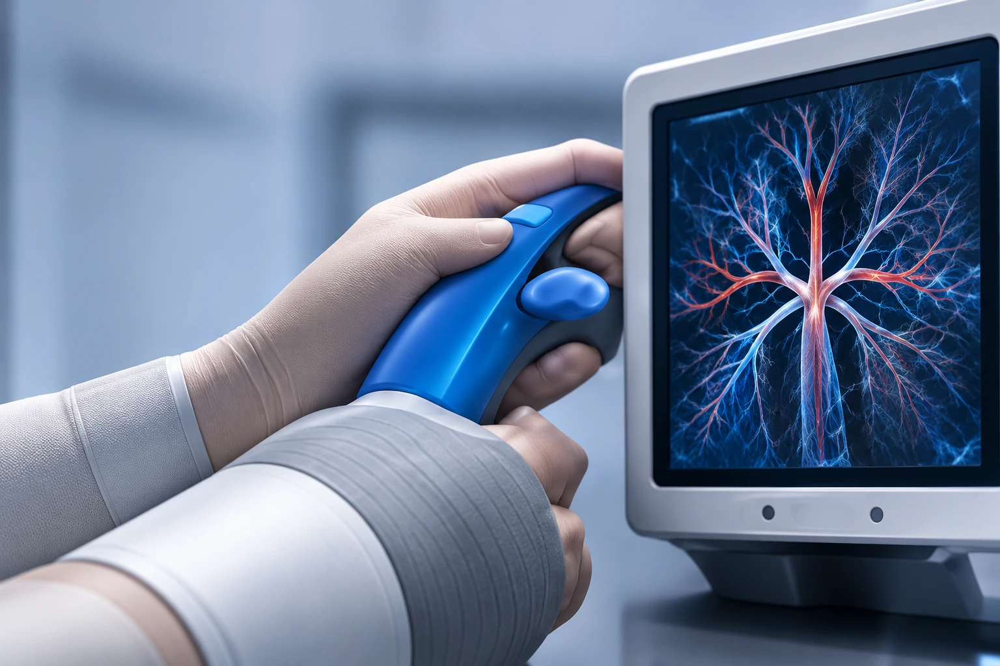
Przenośny SPECT/US
obrazowanie hybrydowe
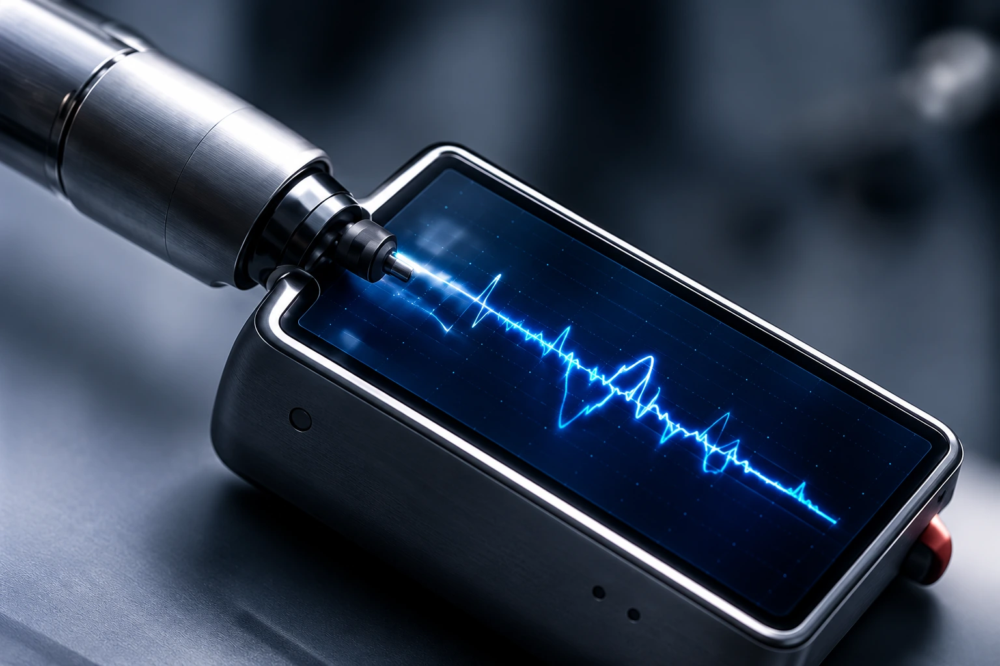
Wibroakustyczne prowadzenie dostępu naczyniowego
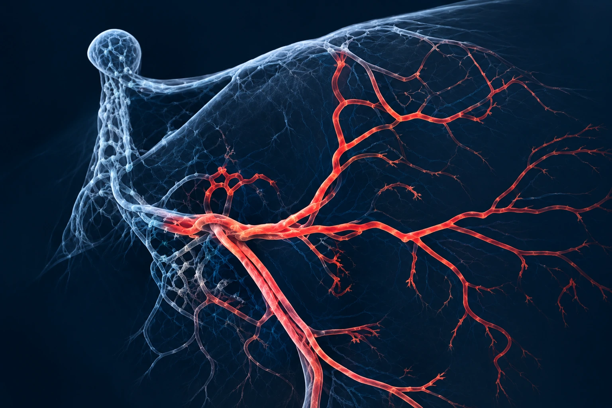
AI w analizie
koronarografii
Dla kogo
Prototypy, urządzenia i rozwiązania wspierające rozwój technologii medycznych.
Wsparcie konstrukcyjne, elektroniczne i programistyczne.
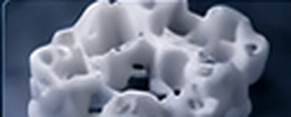
Druk 3D i prototypowanie pomysłów wymagających technicznego przygotowania.
Porozmawiajmy o Twoich potrzebach i możliwościach współpracy.